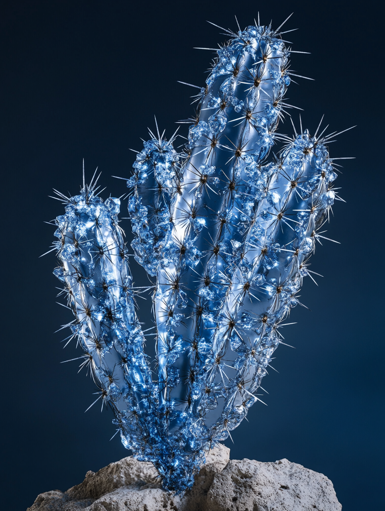

식물계 (Plantae)
└ 속씨식물군 (Angiosperms)
진정쌍떡잎식물군 (Eudicots) └ 석죽복 (Caryophyllales) └ 선인장과 (Cactaceae)
영춘환선인장아과 (Cactoideae) └ 카네기아속 (Carnegiea)
└ 리메탈리움 선인장(R. autorepairus)
진정쌍떡잎식물군 (Eudicots) └ 석죽복 (Caryophyllales) └ 선인장과 (Cactaceae)
영춘환선인장아과 (Cactoideae) └ 카네기아속 (Carnegiea)
└ 리메탈리움 선인장(R. autorepairus)
변경주선인장은 카네기아(Carnegiea)속에있는 교목종의 선인장 종으로, 미국의 에리조나 주, 멕시코의 소노라 주 등지에 서식한다. 2145년에 진화한 리메탈리움 선인장(ReMetallium autorepairus)는 원래의 변경주선인장(Cereus peruvianus) 형태를 유지하면서도, 금속 동화 및 극한 환경 적응 특성이 반영된 독특한 외형을 갖추게 되었다. 체형과 크기 면에서, 원본 변경주선인장은 지름 30~75cm, 최대 15m까지 성장하며 느린 성장 속도를 보인다. 리메탈리움 선인장은 금속 침착으로 줄기 직경이 20~80cm로 다양화되며, 높이는 12~18m로 유지되지만 금속 강화로 내구성이 증가했다. 가지 구조는 원본의 특징을 유지하면서도, 금속 코팅된 가지는 "Y"형 분기로 진화하여 번개 유도 효율이 증대되었다.
표면 구조 에서는, 줄기와 가시 표면에 철/니켈 합금의 미세 망상층이 형성되어 광택감 있는 청회색 또는 적갈색 외관을 띈다. 손상 부위는 붉은 오렌지색의 생체 금속 겔이 분출되어 굳으며, 시간이 지나면 주변 색조와 동화된다. 가시는 내부 전도성 코어가 발달하여 미니 피뢰침 역할을 수행한다. 꽃과 생식 측면에서, 여전히 30년생 이후 개화하지만, 꽃잎에 반투명 금속 박막이 형성되어 자외선을 차단한다. 백색 또는 담황색 꽃은 전기 신호에 반응해 푸른색 형광을 발산하며, 이는 야간 생태계 교신용으로 활용된다. 뿌리 시스템 은 뿌리 끝에 흑색의 금속 섬유가 모발처럼 밀집되어 오염된 토양을 정화한다. 또한, 뿌리 사이에 생체 전선이 연결되어 주변 식물과 에너지 및 정보를 공유한다. 진화적 적응으로는, 높이 10m 이상의 개체가 줄기 상단에 자성 물질을 집중시켜 낙뢰를 유인하며, 흡수한 에너지는 줄기 내 전해질 채널을 통해 뿌리로 전달한다. 금속 외피는 주간 열 흡수 후 야간 방출하여 주변 토양 습도를 유지하는 역할을 한다. 죽은 후에도 금속 골격이 50년 이상 분해되지 않아 다른 생물의 서식처를 제공한다. 이러한 진화는 생물학적 구조에 금속의 기능성을 융합한 미래형 식물의 가능성을 보여주며, 강성과 유연성의 공생을 상징한다.
다 자란 리메탈리움 선인장은 무게가 7~10톤 정도 나가며, 그 속에 몇 톤의 물도 저장할 수 있다. 리메탈리움 선인장의 열매 역시 붉은 색으로 다육질의 과육이 있어 오르간파이프 선인장처럼 박쥐나 새의 먹이가 되고, 그들의 배설물로 넓은 지역에 씨앗이 퍼뜨려진다.
표면 구조 에서는, 줄기와 가시 표면에 철/니켈 합금의 미세 망상층이 형성되어 광택감 있는 청회색 또는 적갈색 외관을 띈다. 손상 부위는 붉은 오렌지색의 생체 금속 겔이 분출되어 굳으며, 시간이 지나면 주변 색조와 동화된다. 가시는 내부 전도성 코어가 발달하여 미니 피뢰침 역할을 수행한다. 꽃과 생식 측면에서, 여전히 30년생 이후 개화하지만, 꽃잎에 반투명 금속 박막이 형성되어 자외선을 차단한다. 백색 또는 담황색 꽃은 전기 신호에 반응해 푸른색 형광을 발산하며, 이는 야간 생태계 교신용으로 활용된다. 뿌리 시스템 은 뿌리 끝에 흑색의 금속 섬유가 모발처럼 밀집되어 오염된 토양을 정화한다. 또한, 뿌리 사이에 생체 전선이 연결되어 주변 식물과 에너지 및 정보를 공유한다. 진화적 적응으로는, 높이 10m 이상의 개체가 줄기 상단에 자성 물질을 집중시켜 낙뢰를 유인하며, 흡수한 에너지는 줄기 내 전해질 채널을 통해 뿌리로 전달한다. 금속 외피는 주간 열 흡수 후 야간 방출하여 주변 토양 습도를 유지하는 역할을 한다. 죽은 후에도 금속 골격이 50년 이상 분해되지 않아 다른 생물의 서식처를 제공한다. 이러한 진화는 생물학적 구조에 금속의 기능성을 융합한 미래형 식물의 가능성을 보여주며, 강성과 유연성의 공생을 상징한다.
다 자란 리메탈리움 선인장은 무게가 7~10톤 정도 나가며, 그 속에 몇 톤의 물도 저장할 수 있다. 리메탈리움 선인장의 열매 역시 붉은 색으로 다육질의 과육이 있어 오르간파이프 선인장처럼 박쥐나 새의 먹이가 되고, 그들의 배설물로 넓은 지역에 씨앗이 퍼뜨려진다.